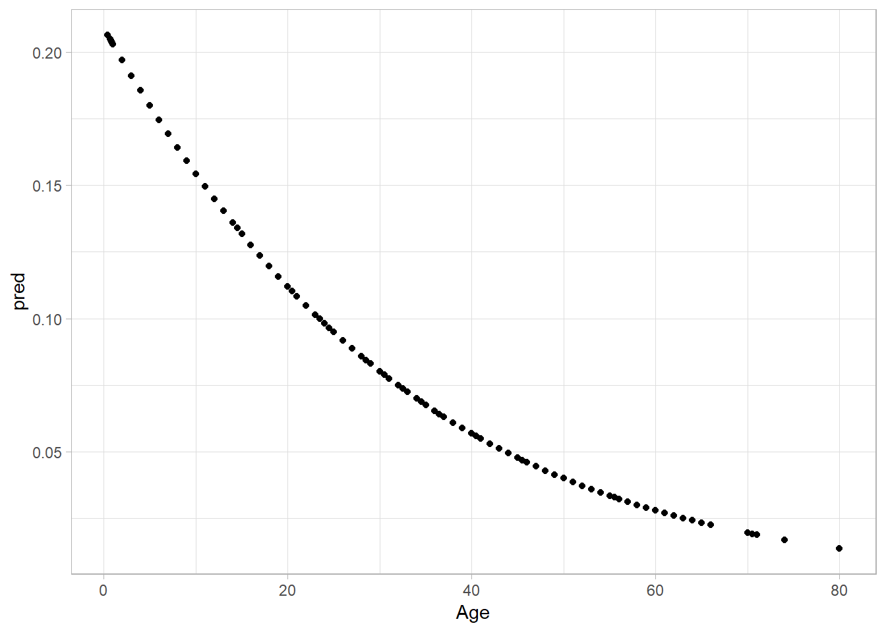
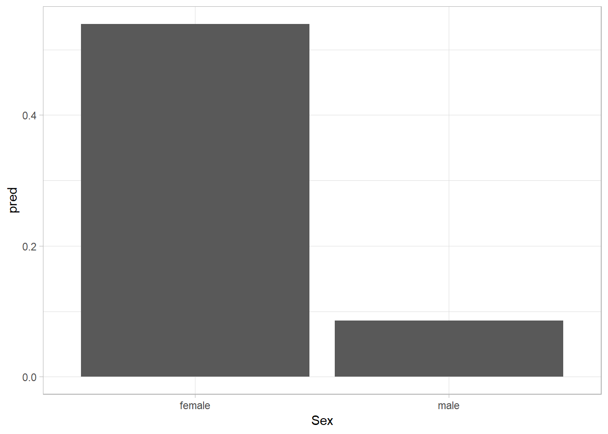

Chapter 4 Logit Models
4.1 Introducing Logit Models
There are a number of different models that can be run with a binary regression model (BRM) including: Linear Probability Model, Logit Model, Probit Mode, and the Log-Log model. Most commonly we choose between the Logit and Probit model. The logit model in the past has been the default because the error distribution assumptions decreased the computing cost for the probability distribution function. The decision between the logit and probit are essentially arbitrary because the major difference between them (the distribution of the error term) is something we cannot tested.
When specifying a BRM, we make three main assumptions:
- The threshold for 0 is \(\tau = 0\)
- The Conditional mean of \(\epsilon\) is 0: \(E(\epsilon | X) = 0\)
- The conditional variance of \(\epsilon\) is constant: \(Var(\epsilon|X = 1)\) for probit models and \(Var(\epsilon|X = \pi/3)\) for logit models.
We also assume that there is an unobserved latent variable that we cannot fully observe, but only observe the cut point (pass/fail). We assume that our observed x’s are linearly related to the latent variable \(y^*\).
4.2 Example of Logit Model
To show an example of a logit model at work, we will examine the titanic dataset. Specifically we will use the titanic package and load the titanic_train dataset. The Dependent Variable is Survived which indicates whether the person survived. Our regressors in this analysis are: Passenger Class (Pclass), Sex (Sex), and Age (Age).
library(titanic)## Warning: package 'titanic' was built under R version 3.5.3library(tidyverse)
library(modelr)
titanic <- titanic_trainOur model in this case is:
\(Pr(Surv = 1) = F(\beta_0 + \beta_1Class + \beta_2Sex + \beta_3AGe + \beta_4Cabin)\)
Now lets specify the model in R:
model <- glm(Survived ~ Pclass + Sex + Age, family = "binomial", data = titanic)The code to run the model is very similar to that of an OLS regression. The left hand side of the assignment operator, <-, is the name of the object you are creating. On the right is the actual model you are running. First is the glm which standards for Generalized Linear Models. Just like with OLS regression, the dependent variable is on the left of the tilde ~. The right side includes the independent variables. In our case the dependent variable is Survived and the independent variables include: Pclass, Sex, and age. The family option tells the glm() function the type of dependent variable you have. In this case we have a binomial dependent variable. Unless you specify otherwise, the default link function is the a logit model. See this quick page describing the basics of the glm() function. Lastly, we always have to call our dataset.
Now let’s take a look at the model.
summary(model)##
## Call:
## glm(formula = Survived ~ Pclass + Sex + Age, family = "binomial",
## data = titanic)
##
## Deviance Residuals:
## Min 1Q Median 3Q Max
## -2.7270 -0.6799 -0.3947 0.6483 2.4668
##
## Coefficients:
## Estimate Std. Error z value Pr(>|z|)
## (Intercept) 5.056006 0.502128 10.069 < 2e-16 ***
## Pclass -1.288545 0.139259 -9.253 < 2e-16 ***
## Sexmale -2.522131 0.207283 -12.168 < 2e-16 ***
## Age -0.036929 0.007628 -4.841 1.29e-06 ***
## ---
## Signif. codes: 0 '***' 0.001 '**' 0.01 '*' 0.05 '.' 0.1 ' ' 1
##
## (Dispersion parameter for binomial family taken to be 1)
##
## Null deviance: 964.52 on 713 degrees of freedom
## Residual deviance: 647.29 on 710 degrees of freedom
## (177 observations deleted due to missingness)
## AIC: 655.29
##
## Number of Fisher Scoring iterations: 5When it comes to variables, we are looking for directionality and significance (we are given log odds for the coefficient estimate). Remember that the dependent variable is whether the passenger survived. Each of our variables are negative meaning that as they increase, the probability of surviving the titanic crash is lowered. Specifically, as you go up in passenger class and age you are less likely to survive. Men (compared to women) are less likely to survive. All three independent variables are significant at virtually all accepted levels. Lastly, we notice that our AIC is listed at 655.29. This is not informative by itself, but can help when comparing this to other models. In its raw form, coefficient estimates cannot tell us magnitude. Additional steps are necessary to get predictions.
If we did, however, want to get something of substance to report in the talbe, you can take the exponent of the estimate. This will give you the odds ratio. Monogan states that: “the odds of an event is the ratio fo the probability the event occurs to the probabiliity it does not occur \(\dfrac{p}{1- p}\). The odds ratio tells us the multiplicatvie factor by which the odds will change for a unit increase in the predictor.” We can compute it as follows:
exp(model$coefficients[-1])## Pclass Sexmale Age
## 0.27567157 0.08028834 0.96374454In the code above, I excluded the intercept with [-1]. The 0.963 indicates that as you go up in age by 1 year, theodds that you will survive decrease by 0.96, all else equal. If you prefer percentages:
100 * (exp(model$coefficients[-1])-1)## Pclass Sexmale Age
## -72.432843 -91.971166 -3.625546In this case as you increase in age, your odds of surviving decrease by 3.6%.
4.3 Adding Predictions
Given that the direct output of a logit model is not particularly helpful. It is nice to create graphs of predicted probabilities. These graphs, generally, create a simulated dataset that is similar to the dataset used to create the model, but will vary one variable while holding the others constant.
The cleanest way that I know of how to make a new dataset is to use the data_grid. The code below calls our original dataset titanic, then calls the data_grid function. Within the data_grid function you call the variable you wish to vary, in our case I picked Age. the .model = model tells data_grid that we want to use all of the predictors in the model we ran, filling them at their typical values (mean or mode). For some reason, the function seems to want to always add in a last NA row at the end so I am filtering it out.
Continuing in the tidy format, we call the add_predictions(model, type = "respone") which comes from the modelr package. Here we are taking this new dataset we have made with data_grid and adding predictiosn based off of the results of our model. The key difference in this line of code compared to OLS is the additional argument of type = "response" which tells R that we want predicted probabilities.
After creating the predictions, it now becomes a simple graphing problem of figuring out what kind of variable you have for the x-axis and determining the appropriate graph. In this case, the most appropiate would be either a line graph or scatterplot.
titanic %>%
data_grid(Age, .model = model) %>%
filter(!is.na(Age)) %>%
add_predictions(model, type = "response") %>%
ggplot(aes(x = Age, y = pred)) +
geom_point()
Now let’s repeat the process for gender:
titanic %>%
data_grid(Sex, .model = model) %>%
add_predictions(model, type = "response") %>%
ggplot(aes(x = Sex, y = pred)) +
geom_col()
Basically, don’t be a guy if you want to survive.
<>
4.4 How did our model do?
One fun way to see how the model performs is to look at a confusion matrix. To create a confusion matrix, have hte model spit out probabilities on the actual data. Then create a new variable that is equal to 1 if the probability is .50 or higher and 0 otherwise. Then you simply have a table that compares the predicted outcome (1,0) to the actual (1,0). The ones that are in the top left and bottom right are the ones that the model correctly predicted, with the other two spots as the mis-classifications.
confusion <- titanic
prediction <- predict(model, confusion, type = "response")
predicted_classes <- ifelse(prediction > 0.5, 1, 0)
predicted_classes <- as.factor(predicted_classes)
table(titanic$Survived, predicted_classes)## predicted_classes
## 0 1
## 0 356 68
## 1 83 207In this case our model correct guessed 356 people not surviving and 207 people as surviving. It incorrectly guessed at 83 would die that actually survived and 68 as surviving who actually died. If we take the correct over total we get the following:
(356 + 207)/(356 + 207 + 83 + 68)## [1] 0.7885154So we can correctly predict 78.8%. This is a good improvement than if we just guessed everyone drowned (the model category).
table(titanic$Survived)##
## 0 1
## 549 342549/(549 + 342)## [1] 0.61616164.5 Final Words
This introduction ignored the assumptions that underly logit models. We also ignored probit models. For a better understanding of how these models work, I recommend “Regression Models for Categorical and Limited Dpeendent Variables” by J. Scott Long